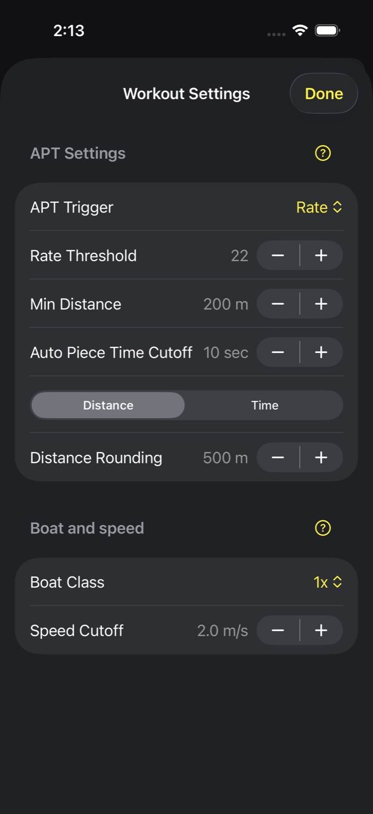

Workout & Auto Piece Timer settings
Choose the live piece-detection settings before you row. The workout saves the settings used for that session.
Auto Piece Timer
The Auto Piece Timer (APT) identifies continuous work intervals. In Workout Settings, choose the trigger and thresholds for your session.

| Control | Meaning |
|---|---|
| APT Trigger | Rate uses the stroke-rate threshold; Power uses power; Both requires both; Either accepts either. |
| Rate / Power Threshold | The effort required to qualify. Power-based detection depends on the active oar calibration. |
| Min Distance | Filters very short pieces from the summary. |
| Auto Piece Time Cutoff | How long inactivity may continue before the piece ends. Repeated non-qualifying strokes can also end it. |
| Piece Rounding | Choose distance or time and its rounding increment. |
Detection needs confirming strokes. A piece’s final endpoint may move back to its last qualifying portion once rowing falls below the trigger or stops.
Other settings worth checking
Boat Class identifies the boat. Speed Cutoff sets the minimum speed for active workout summaries. To smooth selected metrics, open Advanced/Diagnostics → Smoothing.
Oar settings and water reference
Side, type and Moment/Bend Factor come from the selected oar. Check the source and any override in Oar Settings. The recording captures the applied scale and saved dimensions.
After saving sensor alignment, you can capture an optional 12-second Squared float and save it to Oar Settings. This records a separate water reference; a measured shaft-axis tip depth is optional and must be entered if known. A float without that measurement does not establish absolute water depth.
In the upload review, use Boat & blade geometry → Waterline Reference for a measured pin-to-water distance. Measure vertically in centimetres with the boat level. Positive values put the water below the pin. Manual entry takes priority until cleared. Check the reference again after rigging or boat loading changes.
Changing settings for future workouts does not alter a session already recording.
Calorie estimates
Before rowing, open Advanced/Diagnostics → Calorie estimates. For work-based calories, check Work efficiency and Work represented. Only choose One oar × 2 when one sculling oar represents half the rower’s work.
For heart-rate calories, record heart rate and enter body mass. Choose HR profile · no VO₂max and enter age and study equation profile, or choose VO₂ reserve and enter resting HR, maximum HR and VO₂max. Experimental Combined calories require a steady-row calibration.
Review or re-run later
After End Row, Home and Workout History show processing progress. To change a saved workout’s pieces, open it in Workout History, choose Adjust Workout Settings → APT Settings and tap Apply. Use Stroke Group Settings to regroup similar strokes across the row.
For a report, open ritmoSwingLab on Home and choose Analyze latest or Choose a workout. Enable Upload after each workout to send future rows automatically.
iPhone setup & helpiOS sensor alignmentOar settings & calibration